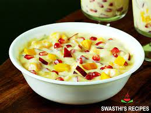

Fruit Custurd

-
About Fruit Custard
-
Fruit custard is a dessert made by mixing chopped seasonal fruits with chilled cusard sauce.
Custard is a saucy dish that was traditionally prepared with cream, milk and eggs.
Today one can find so many ways of making a custard.
Go Back